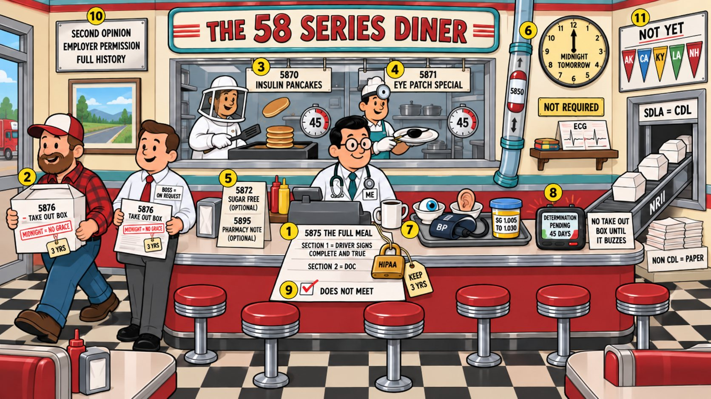

Card 13 of 13 · 49 CFR 391.43
The 58-Series Diner Menu
Forms and recordkeeping — MCSA-5875, 5876, 5870, 5871, 5872, 5895 and 5850, the four required tests, pending, and NRII.

0:00 / 0:00
Press play — the narrator walks the scene and the spotlight follows to each numbered object. Click any paragraph to jump there. Space play/pause · ←/→ previous/next object · [/] previous/next card.
Not started — press play, then try the questions.
What this card covers
Forms and recordkeeping — MCSA-5875, 5876, 5870, 5871, 5872, 5895 and 5850, the four required tests, pending, and NRII. Standard: 49 CFR 391.43.
The hooks to keep
- 5875 is the full meal, kept three years
- 5876 is the take-out box — expires at midnight, no grace
- 5870 and 5871 within 45 days; 5872 and 5895 optional
- 5850 by midnight tomorrow
- Four required tests and no ECG
- Pending means no certificate and 45 days
Test yourself
9 questions on this card
Answer each question to see the explanation, its sources, and the cheat-sheet entry.